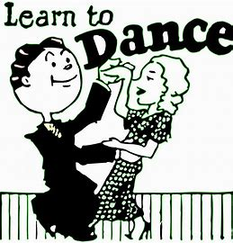

About Us
Dance is a part of human culture and tradition that can showcase creativity, express emotions, and relieve stress123. Dance can also improve physical and mental health, create lasting friendships, increase confidence, and aid relaxation45. Dance can be done anywhere and everywhere, and it helps the brain to learn and produce endorphins15.


person remains energetic throughout the day if a person does a dance every day. In fact, It has health benefits from increasing stamina, relieving stress, and body sculpting to name a few. But it's also great for mental and emotional health. I feel that dance brings people together and provides them with a sense of community with people that have the same interests and passion. I love dancing a lot since my childhood. This was a one of carzy dancing perform by me with my bestie. click here for more details